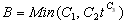
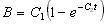
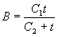

Pollutant buildup that accumulates within a land use category is described (or "normalized") by either a mass per unit of subcatchment area or per unit of curb length. Mass is expressed in pounds for US units and kilograms for metric units. The amount of buildup is a function of the number of preceding dry weather days and can be computed using one of the following functions:
Power Function
Pollutant buildup (B) accumulates proportional to time (t) raised to some power, until a maximum limit is achieved,

where C1 = maximum buildup possible (mass per unit of area or curb length), C2 = buildup rate constant, and C3 = time exponent.
Exponential Function
Buildup follows an exponential growth curve that approaches a maximum limit asymptotically,

where C1 = maximum buildup possible (mass per unit of area or curb length) and C2 = buildup rate constant (1/days).
Saturation Function
Buildup begins at a linear rate that continuously declines with time until a saturation value is reached,

where C1 = maximum buildup possible (mass per unit area or curb length) and C2 = half-saturation constant (days to reach half of the maximum buildup).
External Time Series
This option allows one to use a Time Series to describe the rate of buildup per day as a function of time. The values placed in the time series would have units of mass per unit area (or curb length) per day. One can also provide a maximum possible buildup (mass per unit area or curb length) with this option and a scaling factor that multiplies the time series values.